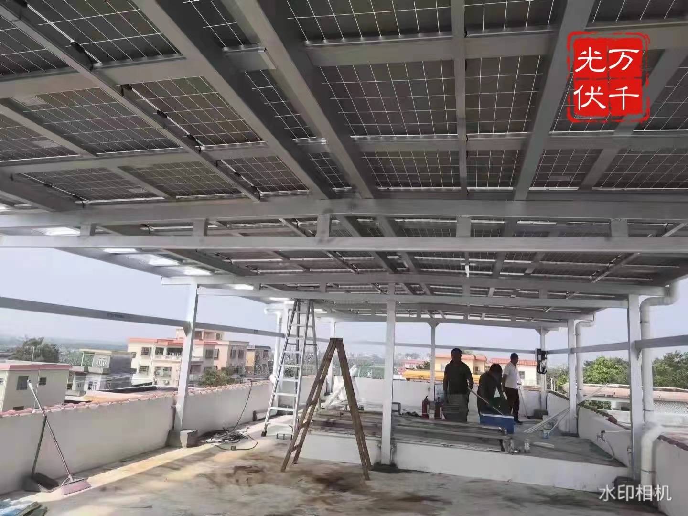

|
综合司司长、新闻发言人梁昌新： 今天，国家能源局召开四季度网上新闻发布会，发布2022年前三季度能源形势、可再生能源并网运行情况，解读《能源碳达峰碳中和标准化提升行动计划》，并回答记者提问。参加今天发布会的有国家能源局发展规划司副司长董万成先生、能源节约和科技装备司副司长徐继林先生、煤炭司副司长刘涛先生、新能源和可再生能源司副司长王大鹏先生，我是综合司司长、新闻发言人梁昌新。请各位司长介绍有关情况。 发展规划司副司长董万成： 2022年前三季度能源供需总体平稳 今年以来，面对复杂严峻的外部环境和形势变化，能源行业深入贯彻落实党中央、国务院各项决策部署，妥善应对疫情影响和国际能源市场变化，多措并举保供稳价，能源供需形势总体平稳，价格总体稳定，对经济恢复向好起到重要的作用。 一、稳增长政策持续发力，能源消费保持增长态势 随着稳经济一揽子政策措施发挥效能，带动能源消费较快回升。三季度，全社会用电量同比增长6.1%，较二季度提升5.3个百分点；电煤需求增加拉动煤炭消费较快增长；天然气、汽煤油消费还未恢复到去年同期水平，但降幅有所收窄；基建投资持续发力、货运物流复苏支撑柴油消费保持稳定增长。 二、着力增强供应能力和弹性，能源供需保持总体平稳 充分发挥煤炭、煤电兜底保障作用，持续释放煤炭先进产能，加强重点产煤地区和企业生产调度。前三季度，原煤日均产量保持在1200万吨以上，同比增长11.2%。9月以来，全国统调电厂存煤保持在1.7亿吨以上。全力推动油气增储上产，督促供应企业和地方全面签订供气合同，推进储气设施“应储尽储”。前三季度，原油、天然气产量分别同比增长3.0%、5.4%。目前，采暖季用气合同已基本落实，地下储气库注气进度执行良好。 三、有力有效稳定能源价格，助力抑制通胀输入 面对全球能源价格持续高位震荡，能源行业及时研判、超前谋划，有效应对能源市场波动。降低天然气采购成本，合理引导天然气消费。中央企业发挥“资源池”优势，国产气和进口管道气、进口LNG长协气等稳价资源占比增大。主要供气企业管道气平均供气价格多在每立方米2―3元，部分尖峰增量气源价格也控制在每立方米4―5元，远低于国际市场价格。强化电煤中长期合同履约监管，保障煤炭中长期交易价格运行在合理区间。 四、绿色低碳转型稳步推进，能源生产持续降碳提效 前三季度，新增非化石能源发电装机9400万千瓦左右，占新增总装机的82%。第一批大型风电光伏基地已全部开工，第二批项目正在陆续开工、目前正在抓紧推进第三批项目审查。抽水蓄能电站累计装机规模达4360万千瓦。发挥好政策性开发性金融工具作用，能源项目投资加速释放。今年前8个月全国能源领域重点项目完成投资额12295亿元，同比增长16.7%，较上半年增速提高0.8个百分点。 新能源和可再生能源司副司长王大鹏： 2022年前三季度可再生能源发展持续向好 一、可再生能源整体发展情况 国家能源局认真贯彻落实“四个革命、一个合作”能源安全新战略，锚定碳达峰碳中和目标任务，落实“十四五”可再生能源发展规划，加快推进大型风电光伏基地、大型水电站和抽水蓄能电站等重大项目建设，聚焦能源安全供应和民生保障，努力推动可再生能源高质量跃升发展。 可再生能源装机规模稳步扩大。2022年前三季度，我国可再生能源新增装机9036万千瓦，占全国新增发电装机的78.8%。其中，水电新增1590万千瓦、风电新增1924万千瓦、光伏发电新增5260万千瓦、生物质发电新增262万千瓦，分别占全国新增装机的13.9%、16.8%、45.8%和2.3%。截至2022年9月底，我国可再生能源发电装机达11.46亿千瓦。其中，水电装机4.06亿千瓦（其中抽水蓄能0.43亿千瓦）、风电装机3.48亿千瓦、光伏发电装机3.58亿千瓦、生物质发电装机4060万千瓦。 可再生能源发电量稳步增长。2022年前三季度，全国可再生能源发电量达1.94万亿千瓦时。其中，规模以上水电9507亿千瓦时，同比增长5%；风电5441亿千瓦时，同比增长15.9%；光伏发电3286亿千瓦时，同比增长32.2%；生物质发电1129亿千瓦时，同比增长0.1%。 可再生能源持续保持高利用率水平。2022年前三季度，全国主要流域水能利用率约98.6%，较上年同期提高1.1个百分点；全国风电平均利用率96.5%，较上年同期降低0.5个百分点；全国光伏发电平均利用率98.2%，较上年同期提高0.2个百分点。 二、水电建设和运行情况 2022年前三季度，全国新增水力发电装机容量1590万千瓦。截至2022年9月底，水电装机4.06亿千瓦（其中抽水蓄能0.43亿千瓦）。 全国规模以上水电发电量9507亿千瓦时，同比增长5%；全国水电平均利用小时数为2729小时。全国主要流域水能利用率约98.6%，同比提高1.1个百分点。 三、风电建设和运行情况 2022年前三季度，全国风电新增并网装机1924万千瓦，其中陆上风电新增装机1800万千瓦、海上风电新增装机124万千瓦。从新增装机分布看，“三北”地区占比约74.3%，中东部和南方地区占比约25.7%。截至2022年9月底，全国风电累计装机3.48亿千瓦，其中陆上风电累计装机3.2亿千瓦、海上风电累计装机2726万千瓦。 全国风电发电量5441亿千瓦时，同比增长15.9%；利用小时数1621小时，利用小时数较高的地区中，福建2053小时、新疆1920小时、蒙东1841小时、蒙西1784小时。 全国风电平均利用率96.5%，青海、新疆风电利用率同比显著提升，分别达到93.1%、94.7%，同比分别提升4.3个、2.2个百分点。 四、光伏发电建设和运行情况 2022年前三季度，全国光伏新增装机5260万千瓦，其中，光伏电站1727万千瓦、分布式光伏3533万千瓦。截至2022年9月底，光伏发电累计装机3.58亿千瓦。从新增装机布局看，装机占比较高的区域为华北、华东和华中地区，分别占全国新增装机的30.0%、25.0%和19.1%。 全国光伏发电量3286亿千瓦时，同比增长32.2%；利用小时数968小时，同比增加49小时；利用小时数较高的地区为东北地区1237小时，华北地区1056小时，其中利用率最高的省份为黑龙江1316小时、吉林1263小时。全国光伏发电利用率98.2%，同比提高0.2个百分点。 五、生物质发电建设和运行情况 2022年前三季度，生物质发电新增装机262万千瓦，累计装机达4060万千瓦，生物质发电量1129亿千瓦时。累计装机排名前五位的省份是广东、山东、江苏、浙江和河南，分别为416万千瓦、411万千瓦、296万千瓦、284万千瓦和255万千瓦；新增装机排名前五位的省份是广东、黑龙江、河南、辽宁和广西，分别为39.4万千瓦、28.6万千瓦、27.9万千瓦、23.3万千瓦和18.0万千瓦；发电量排名前五位的省份是广东、山东、浙江、江苏和安徽，分别为142.2亿千瓦时、115.4亿千瓦时、84.7亿千瓦时、84.0亿千瓦时和78.2亿千瓦时。 能源节约和科技装备司副司长徐继林： 《能源碳达峰碳中和标准化提升行动计划》解读 各位媒体朋友，大家好。下面简要介绍一下9月20日印发的《能源碳达峰碳中和标准化提升行动计划》（以下简称《行动计划》）有关情况。 一、《行动计划》出台背景 为深入贯彻党中央、国务院关于碳达峰碳中和的重大战略决策和标准化发展重要部署,充分发挥标准推动能源绿色低碳转型的技术支撑和引领性作用，国家能源局制定了《能源碳达峰碳中和标准化提升行动计划》（以下简称《行动计划》）。《行动计划》紧密结合能源领域推动碳达峰碳中和工作主要任务，针对能源绿色低碳转型领域标准供给不足、标准体系不完善、标准化与技术创新和产业发展协同不够等问题，坚持需求导向、系统布局，强化示范引领、协同联动，重点推进能源绿色低碳转型、技术创新、能效提升和产业链碳减排等相关领域标准化。 二、《行动计划》主要内容 《行动计划》主要包括六方面内容。 一是大力推进非化石能源标准化。加快完善风电、光伏、水电、各类可再生能源综合利用以及核电标准，组织开展风电光伏标准体系完善行动、水风光综合能源开发利用标准示范行动、抽水蓄能专项标准完善和示范行动、先进三代压水堆核电标准应用实施行动。 二是加强新型电力系统标准体系建设。完善新型电力系统安全稳定运行相关标准，进一步优化完善输变配电领域相关标准，加快电源结构转型升级相关配套标准研制，推动电力需求侧和电能替代领域标准研究制定，推进电力市场标准体系建设。组织开展新型电力系统标准体系专项研究和示范行动。 三是加快完善新型储能技术标准。根据新能源发电并网配置和源网荷储一体化发展需要，完善新型储能标准管理体系和技术标准体系，推动各类储能技术研发、示范和标准制定协同发展。组织开展新型储能标准体系建设行动。 四是加快完善氢能技术标准。完善氢能标准顶层设计和标准体系建设，围绕可再生能源制氢、电氢耦合、燃料电池及系统等领域，增加标准有效供给。组织开展全产业链绿氢标准完善行动。 五是进一步提升能源领域能效相关标准。组织推动煤炭、石油和天然气绿色高效生产、转化利用相关标准制修订，进一步提升煤炭和油气相关资源综合利用标准水平，完善和提升电力输送能效标准，加快推动综合能源服务标准体系建设及基础性标准研制。组织开展煤电、煤炭深加工、石油炼化能效标准提升专项行动。 六是健全完善能源产业链碳减排标准。加快构建能源领域碳减排、二氧化碳捕集利用与封存（CCUS）、能源产业链数字化、能源装备碳足迹等领域标准体系，组织开展相关领域标准体系完善和试点示范行动。 通过组织实施《行动计划》，预期到2025年，能源标准化组织体系进一步完善，能源行业标准从数量规模型向质量效益型转变，能源标准与技术创新和产业发展良好互动，初步建立起较为完善的标准体系，有效支撑能源绿色低碳转型、节能降碳、技术创新、产业链碳减排。 下一步，国家能源局将会同有关部门，深入学习贯彻党的二十大精神，推动完善能源碳达峰碳中和相关标准体系，加快急需领域标准制修订，促进标准与技术创新和产业发展协同联动，为规划建设新型能源体系和实现能源碳达峰碳中和提供支撑。 综合司司长、新闻发言人梁昌新： 现在请各位记者提问，由相关司负责同志解答。 人民日报记者： “十四五”时期可再生能源要实现高质量跃升发展，请问实现路径是什么？“十四五”期间怎样推动大型风电光伏等可再生能源基地建设？ 新能源和可再生能源司副司长王大鹏： “十四五”及今后一段时期全球能源将加速向低碳、零碳方向演进，大力发展可再生能源已成为全球一致行动。2020年9月习近平总书记提出碳达峰碳中和目标，为可再生能源发展进一步指明了前进方向、提供了根本遵循，提出了新的更高要求。锚定碳达峰碳中和，“十四五”期间我们将深入贯彻落实“四个革命、一个合作”能源安全新战略，推动可再生能源实现高质量跃升发展。在生产方面，优化发展方式，大规模开发可再生能源。在“三北”地区大力推进风电和光伏发电基地化开发，在中东南部地区积极推进风电和光伏发电分布式开发，在西南地区统筹推进水风光综合基地一体化开发，在东部沿海地区积极推动海上风电集群化开发。在消费方面，促进存储消纳，高比例利用可再生能源。加快建设新型电力系统，提升可再生能源存储调节能力，强化电网基础设施支撑，加强可再生能源终端直接利用，扩大可再生能源非电利用规模，推动可再生能源规模化制氢。在技术方面，坚持创新驱动，高质量发展可再生能源。加大可再生能源技术创新攻关力度，补齐技术装备短板，加快培育新模式新业态，提高产业链现代化水平，提升供应链弹性韧性，持续巩固提升我国可再生能源产业国际竞争力。在体制方面，健全体制机制，市场化发展可再生能源。深化“放管服”改革，完善可再生能源电力消纳保障机制，健全可再生能源市场化发展机制，建立健全绿色能源消费机制。在国际合作方面，坚持开放融入，深化可再生能源国际合作。积极参与全球能源转型变革，深度融入共建“一带一路”高质量发展和构建人类命运共同体战略布局。 去年以来，我们深入落实党中央、国务院决策部署，会同国家发展改革委，积极推动大型风电光伏基地项目建设取得阶段性进展。目前第一批大基地项目已全面开工，部分已建成投产，第二批大基地项目正在陆续开工。 “十四五”期间，我们将持续大力推动大型风电光伏基地建设。一是坚持“三位一体”，统筹推进风电光伏项目、配套调峰煤电和电网送出工程的规划与建设，确保同步规划、同步建设、同步投运。二是加强统筹协调，积极与自然资源、生态环境、林草等部门沟通协调，做好大基地用地、生态、环保等要素保障。三是加强督促落实。充分发挥国家和省两级协调机制作用，坚持按月调度，定期召开可再生能源开发建设形势分析会，及时掌握基地项目建设进展，及时协调解决有关问题，推动基地建设取得实实在在的成效。 新华社记者： 国家能源局将如何组织落实《能源碳达峰碳中和标准化提升行动计划》相关重点领域任务？ 能源节约和科技装备司副司长徐继林： 《能源碳达峰碳中和标准化提升行动计划》是能源领域构建支撑碳达峰碳中和标准体系的顶层设计文件。我们将按照建设能源领域新型标准体系的思路，以深化能源标准化改革为动力，遵循需求牵引、系统布局、重点推进、协调一致等原则，推动政府主导制定的标准与市场自主制定的标准协同发展、协调配套，通过开展标准体系研究、加强标准制修订、开展标准示范、完善标准化组织管理体系等，组织推动各项任务落实。 一是加强标准体系研究。开展调查研究，加强新型电力系统、储能、氢能、抽水蓄能、二氧化碳捕集利用与封存（CCUS）、能源产业链碳减排等领域标准体系研究，组织梳理相关领域标准需求，加强与国家标准、团体标准衔接协调，抓紧建设完善相关标准体系，系统谋划、统筹推进能源领域新型标准体系建设。 二是加强标准制修订。组织开展能源行业标准制修订，聚焦重点领域共性基础标准、关键急需标准制修订，加大能源绿色低碳转型、新兴技术产业发展、能效提升和产业链碳减排等标准供给，加快标准更新升级。统筹能源行业标准财政经费，加大相关领域标准经费支持力度。 三是加强标准示范。围绕各专项行动任务，依托有关工程项目设立示范，组织项目业主、研发制造单位和标准化机构联合，开展标准示范，有关项目根据实际情况可享受能源领域首台（套）重大技术装备示范应用有关支持政策。加强工程策划、设计、建设、验收、运行全阶段与相关标准制修订的紧密协同，推动技术研发、项目建设、产业发展和标准化联动发展。 四是完善标准化组织管理体系。针对涉及面较广的重点领域标准制修订，研究成立跨标委会的标准工作组，切实加强相关标委会的沟通协调，推进相关标准化工作。鼓励并充分吸纳能源企业、科研机构、高等院校依托能源项目建设、重大科研项目等参与标准制修订和示范。 中国电力报记者： 请问2022年以来煤炭增产保供工作取得了哪些成效？ 煤炭司副司长刘涛： 今年以来，面对严峻复杂的国际能源形势和较大的国内能源保供压力，国家能源局坚决贯彻党中央、国务院决策部署，强化责任担当，加强调度协调，做好“六稳”“六保”工作，优化调整煤矿产能置换政策，加快实施“十四五”煤炭规划，全力以赴保障煤炭安全稳定供应。一是煤炭产量较快增长。1-9月，全国规模以上企业煤炭产量33.2亿吨，同比增长11.2%。从重点产煤地区看，晋陕蒙新煤炭产量占全国的80.9%，对产量增长的贡献率达90.5%，充分发挥了产煤大省的作用。二是煤矿先进产能加快建设。累计核准（含调整建设规模）煤矿项目14处、新增产能6200万吨/年以上，推动进入联合试运转试生产煤矿产能约9000万吨/年，进一步夯实了煤炭增产保供的产能基础。三是电厂存煤大幅提升。9月以来，全国统调电厂存煤保持在1.7亿吨以上，电煤供应形势持续向好，有效保障了发电供热用煤需求。四是煤炭价格总体保持平稳。10月秦皇岛5500大卡动力煤年度长协价格719元/吨，较年初下降6元/吨，比长协最高限价770元/吨低51元/吨，稳住了电煤供应的基本盘。电厂煤炭综合到厂价明显低于国际水平，为保障民生用能奠定了良好的基础。 综合司司长、新闻发言人梁昌新： 本次发布会到此结束！谢谢大家！ |
